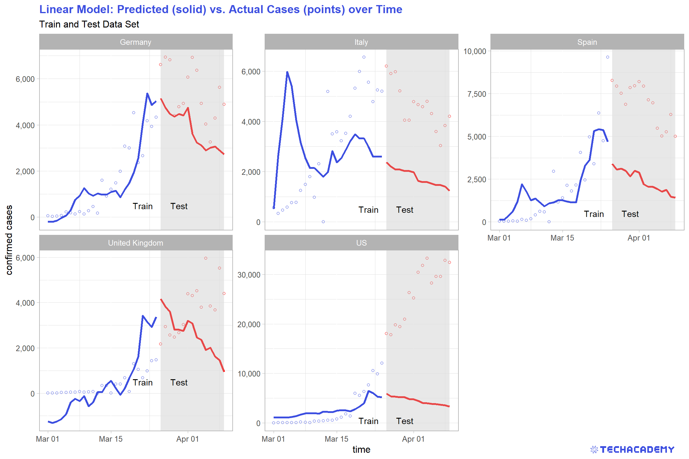

5 Covid-19 Prediction
Until now you have looked deeply into the given data and visualized different aspects of it. But wouldn’t it be nice to predict the number of new infections with other variables contained in the data set? In this part, we’ll do just that and go a step further by developing simple (or more advanced) statistical models which will be able to predict the amount of new infections on a given day.
These predictions will be based on features which contain information about this specific day. The goal of our analysis will be to identify dependencies (correlations) between these features and the number of new infections. Your model can then exploit those correlations to make predictions.
You already looked at the number of Google search queries for “corona”-related keywords in the first part. Do you think that those might have something in common with the daily new infections? Also, you’ve analyzed stock market data for the relevant period. Is the stock market moving according to new infections? You might think that those two variables have some predictive power. When a person is showing symptoms and fears that they might have contracted the disease, they will google it and try to get more information. Also, the more new infections are announced, the worse for the economy and hence – as a proxy for general economic expectations – the stock market. In this part, we’ll check those claims and see how well models based on those and other variables perform.
The procedure to get to a statistical model ready for prediction is divided into two parts. First, you train your model on some data which is called the train data set. Afterwards, you test your model on data which the model has never come into contact with during training. This is called the test data set. This procedure gives us a good estimation of how well your model would perform in real life with completely new data. If you train your model in a way that it only remembers the data from the training data set, it would perform very well on this set. However, it would not be able to generalize the structure of the data and transfer it to new unseen data – this problem is called overfitting. We can detect it by evaluating the predictions of our model on a test data set. On the other hand, you could also underfit your model. This means it doesn’t learn the relationships between the dependent and independent variable(s) well enough to perform reasonably well on the unseen test data set. Hence, your top priority must be to find the optimal balance between those two problems and fit your model well to both training and test data.
But how can you check if your model under- or overfitted or whether it is just fine? As already explained above, after the training process we evaluate our model by seeing how well it performs when being used on the test data set. We do this by letting our model use the previously unseen test observations to make predictions for the dependent variable. In our case, we would use the Google trends variable of the test data set to predict the number of new infections. We then compare our predictions with the actual number of cases that is contained in the test data set and see how close we came.
For this performance evaluation it is useful to define a metric which compares the prediction of your model with the true values. One such measure is the mean absolute percentage error (MAPE) which computes the mean percentage deviation of the prediction from the true values.
\[ MAPE = \frac{1}{n} \sum_{t=1}^n \left\lvert\frac{(y_t - \hat{y}_t)}{y_t}\right\rvert \]
The larger the MAPE is, the worse your model performs. You can interpret that metric as the average percentage deviation of your model’s prediction to the true values. \(MAPE = 0.5\) for example means that on average, your prediction is 50% off the true values. If you look closer at other prediction tasks for continuous variables, you’ll also come across some other metrics such as the root mean squared error (RMSE) or mean absolute error (MAE). Think about why those are not well suited for this kind of prediction evaluation.
So let’s get started with the prediction. Once again, we have to lay some groundwork before we can let our models do the magic. You’ll start with some feature engineering and correlation analysis. After that, you can set up your first very simple univariate linear regression model (i.e. one dependent and one independent variable) for a limited set of observations – in this case German data only. When we’ve got that running, we’ll continuously improve our model by adding or modifying features. We then take our best model and check out how well it performs on the entire data set. You’ll then see how well the German model runs on four other countries.
5.1 Feature Engineering and Correlation Analysis
Before we start, you’ll need to load a new data set. We’ve already prepared a panel data set with five countries and many important characteristics. Import predict.csv, on which this entire part will be based. Many variables are similar to the data set before, but there are also some important differences.
The goal of our model is to predict the number of new infections per day. This value corresponds to the difference between the cumulative number of infections of the current day and the day before in each country. Assign the computed values to a new variable new_confirmed – this will be the column your model is trying to predict.
In a later model, we also want to include lags for the Google Search trend data. This means that each row of our data frame should not only contain the search trend for the current day but also from the day before (lag=1), two days before (lag=2) and so on. Compute the lags from 1 to 10 for each row and assign it to new columns in your data frame. We will explain later why we need this and what the idea behind this feature is, but it is easier to compute it right away.
The next step is to analyse the dependency between the different columns or features in your train data set. Select several columns of the data frame, compute the correlations between them and visualize them in a scatterplot. It is important to include the column new_confirmed here because we are especially interested in the dependency between the other features and this column.
Your output could look similar to this one:
Compute the daily number of new infections for each observation in the data set. You can select previous day’s values with the dplyr function lag(). Take care of accurately computing the lags over several countries in our data set by grouping your data frame appropriately.
You can either compute ten different lags by just copying and pasting your code. Or you can write a function that takes care of this process automatically. The first option is very error prone and not flexible at all. What if you want to do 15 instead of ten lags? So google how you can automatically create several different lag-variables at once.
Use the function cor() to analyze the correlation between your variables in a correlation matrix. Which features display the highest correlation?
Use the library GGally to generate a nice table that contains both scatterplots and correlations – but restrict yourself to promising variables. This plot is rather complex and takes increasingly more time to compute and becomes less readable the more variables you include. Maybe stick to the most promising 5 to 7 variables.
You have to compute the new_confirmed column first, which can easily be done with the pandas function df[‘column_name´].diff(), which computes the difference between the current value of the column and the value of the row before. But keep in mind that you first have to group your data by the different countries in the data frame.
Quite similarly you can compute the lags using the pandas function df[‘colum_name’].shift(1).
To compute the correlation matrix you can use a function from the seaborn library, which builds on top of matplotlib and is often a useful extension.
Import seaborn using import seaborn as sns and use than the seaborn function sns.heatmap(df.corr()). This function takes as input a pandas data frame on which the pandas function corr() is applied – which computes the correlations between the different columns. If you compute the correlation heatmap for all columns in the data frame, it can be a bit confusing, therefore select just a subset of all columns.
You can then visualize the correlations in a scatter plot using the seaborn function sns.pairplot(df), which again takes a data frame as input.
5.2 Build a Simple Model Prototype
If you have a look at the correlation matrix from the last exercise, you notice a correlation between new_confirmed and gs_corona of around 0.2. We want to use this data now in our model and evaluate how good this prediction is.
The idea is, that if a lot of people search on the internet for symptoms and the keyword corona, a lot of new infections are to be expected. Conversely, if few people search for the disease, we might expect less new infections. We start with a linear regression which is a simple yet powerful tool. The model will look like this:
\[ new\_confirmed_t = \beta_0 + \beta_1 gs\_corona_t +\epsilon_t \]
\(new\_confirmed\) is your dependent variable that you want to explain by the independent variable(s), in this case \(gs\_corona\) only. To optimally fit a linear line to the data, the ordinary least squares method estimates an intercept \(\beta_0\) and the coefficient(s) \(\beta_k\) for every single independent variable. In our univariate case, this is only \(\beta_1\).
Before we can start with modelling, we have to define our train and test data sets. We will begin with a prediction for Germany, so filter the data set in a way that it only contains the data from Germany. Afterwards, divide your data set into a train and test data set based on the time periods shown in Table .
| DataSet | From | To |
|---|---|---|
| Train | 01 March 2020 | 25 March 2020 |
| Test | 26 March 2020 | 09 April 2020 |
Now we are well prepared to start modelling.
Define a linear regression model of the form shown above and train it on your train
data set with new_confirmed as the value we want to predict and gs_corona as
the only feature of the model. After our model is trained, we want to try a prediction
with this model.
Now your model has learned the relationship between the number of new infections and google searches in the training period. You can now take this model to the test time period and check how well it performs on previously unseen data.
Use your test data set to feed it into your model and predict the number of new
infections for the test period. At the moment we don’t know how well our model
performs. Let’s compute the MAPE as described above for our test data set. Compute the MAPE for your model using the predictions of the test set and
the corresponding actual values of new_confirmed.
Furthermore, we want to visualize the true values for the train and test data set, as well as the predictions from our model data set for both time periods in one plot. This is how the plot should look like:
Your first simple linear regression model result might look something like this. Think about what the coefficient and the model fit metrics mean. How good do you think is this model based on the result?
Generate two separate data sets: train and test. Split the original data by time as defined above and select only observations in Germany.
Then use the base function lm() to train the model on your train data set. Save and inspect that model with summary().
Use predict() to apply the model to your test data set. This function returns the predictions \(\hat{y}_t\) as a vector.
It might make sense to name the relevant y-vectors in a structured way. You could think about such a structure:
y_train_vec, yhat_train_vec, y_test_vec, and yhat_test_vec, where y refers to the actual values and yhat denotes the predicted values.
You can easily generate regression tables in nice LaTeX, HTML or text format with the package stargazer. Use it to compare different models among each other in your RMarkdown document.
Filter the data correspondingly and you should have for different pandas series:
X_train = values of gs_corona in the train period
X_test = values of gs_corona in the test period
y_train = values of new_confirmed in train period
y_test = values of new_confirmed in test period
You have to import LinearRegression() from sklear.linear_model and can then train your model using
model = LinearRegression()
model.fit(X_train.reshape(-1,1), y_train)
You need to reshape the X values because you only use one feature in this case. If you use more then one feature you don’t have to reshape your data.
After training, you can use the predict() method on your model an pass the X_test values to the model.
5.3 Refine Your Simple Regression Model
If you look at the predictions of your model for the train and test period, you see that it doesn’t work well, especially on the test period. A possibility could be that there is a lag between the time people google for symptoms to when they are diagnosed with Covid-19. You probably start googling once you show symptoms which is likely a few days before you visit a doctor. After the visit, it will additionally take a few days before your test results will arrive. Therefore we want to include a lag in our model. Luckily we’ve already computed the lagged values.
Train a new linear regression model, but in this case, don’t use the gs_corona column as a feature, but the column with a lag of ten days. Your model will then have this form:
\[ new\_confirmed_t = \beta_0 + \beta_1 gs\_corona_{t-10} +\epsilon_t \]
Look at the subscript for \(gs\_corona\). That’s the only difference to your previous model.
Again compute the MAPE and visualize the prediction as you have done before. You can just reuse most of the code from the previous exercise. Compare the MAPE and your visualization with the model you build before. Did it improve?
Now check out the other features that are available to you in the data set. Include additional features into your model, for example, stock data or other lagged data. Build several different models and each time evaluate them and compare it with the other models. Do you find models that perform significantly better than the benchmark univariate linear regression model? Keep in mind that you can only reasonably compare a model’s performance on previously unseen test data sets. Always keep visualizing the results, as this is one of the easiest methods to spot how well a model can predict the true values.
Now take your best-performing model in terms of MAPE and based on your visual inspection. Use it for the next exercise.
5.4 Extend Your Model to Several Countries
Until now you’ve trained your model only on data for Germany. Train your model now on several countries on the train data set and evaluate how it performs on both the training and test observations. Do this by computing the MAPE and visualizing your predictions.
Since you have different countries in your models, it might make sense to include a country-variable (dummy) in your regression.
\[new\_confirmed_{it} = \beta_0 + \beta_1 gs\_corona_{it-10} + \beta_3 country_i +\epsilon_{it} \]
A side note, which you can consider in your model, but don’t need to: In this model setup, \(\beta_3\) tells you, by how much the number of new confirmed cases deviates from the baseline country, on average in absolute terms. This might not make too much sense. Take the example US and Germany. It is likely that those countries do not have a time-stable difference in the absolute number of new confirmed cases. Rather it might be the case that Germany on average has a constant percentage less daily new infections over time than the US. You can incorporate that behaviour into your model by not using the “level” of \(new\_confirmed\) but instead using the natural logarithm \(ln(new\_confirmed)\) as the dependent variable. The interpretation for the coefficients now changes. Google how you can interpret the coefficient for the country dummy in this case (hint: “level-level, log-level regression”).
If you choose to make those transformations, don’t forget to transform your predicted values back from the log values to level by exponentiating them.
Again evaluate your model’s predictions visually and in terms of MAPE. How well does your model work on other countries than Germany? Try to find reasons for country-specific differences and conclude if you would use such a model to predict the number of new daily infections.

Congratulations! You’ve made it to the end of your TechAcademy Data Science project. After visualizing the data in the first part, you’ve also set up predictive models in this section. If you stuck around until this part and managed to code the better part of the exercises, you’ve definitely earned your certificate! We hope you had fun learning Data Science with this data set and you enjoyed it – at least the parts where you didn’t get stuck forever because of some unexplainable coding error.